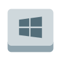

デジタルで、もっと前へ。
デジタルで、私たちの「はたらく」をもっと自由に。
DX推進 - 社内報 Vol. 2 | 2026.04.17
デジタルで、私たちの「はたらく」をもっと自由に。
コミュニケーションをとるうえで、使用する単語の平準化が必要です。生成AIをつかったリアルタイム翻訳ができる時代とはいえ、業務でそんな悠長なことはしていられません。また「こそあど言葉」では一時に同じものを見ていないとわからず非合理的です。
基本的なアプリやその各部の名称、操作に関連したキーワードは、なんとなくでもいいので認識できるようにしましょう。
今回は、ほんのその一例を紹介します。
ホームページ/WEBサイトを閲覧、利用する際に使うアプリケーションを「ブラウザ」と呼びます。インターネットブラウザやウェブブラウザとも呼びますが「ブラウザ」といえばこれらのことだと思って問題ありません。
Windows環境では左のアイコンのものが代表的です。上がMicrosoft Edge、下がGoogle Chromeです。
ブラウザの画面各部の名称で、アドレスバーや検索バー/検索窓、設定などは認識できるようにしておくと、Q&Aの際などで意思疎通をしやすくなります。
ファイルを探したり移動やコピーをする際に左のアイコン、「エクスプローラー」を使用していると思います。これはファイルマネージャーやファイル管理ソフトと呼ばれるものですが、Windows環境ではほぼこれ一択なので「エクスプローラー」で通します。（Windows標準アプリの「Files」も使い慣れると便利ですよ。）
メールの送受信はOutlookを利用している方が大半だと思います。「メーラー」や「メールアプリ」と呼びます。特に指定も制限もしていません。好みで選んでいただいてかまいません。設定に必要な情報は提供します。
ただし、今後社内のスケジュール管理/共有や会議室予約のオンライン化を検討中です。この場合Outlookのみの対応となるかもしれませんのでご了承ください。
「スタートメニューから・・・」と言われたら画面下のタスクバーにあるこのアイコンをクリックします。表示されるのが「スタートメニュー」です。
下のウィンドウズキーを押すだけでもスタートメニューを呼び出せます。

操作方法を聞いた時に「ウィンドウズキーと一緒に・・・」と言われたら、キーボード手前左側に配置されているこのマークが描かれたキーを指します。
いろいろな機能の呼出やキーボードショートカットなど、結構使います。
Excel業務でも欠かせないキーです。「タブキー」と呼びます。表へのデータ入力などではおまけ機能もあるのでEnterキーより使用します。あれ？使ってませんか？
「コントロールキー」と呼びます。ウィンドウズキーと同様、複数のキーとの組み合わせでショートカット機能を呼び出す際に使用します。
「オルトキー」です。こちらも組み合わせでショートカット呼び出しに使用します。
Vol.1 配信を受けて、社内から情報を提供いただきましたので紹介いたします。「地域産業の発展とIT」という内容から、1組目の「SakeScope」がおもしろいです。しっかり観た方は「おっ!?」と何かに気づくかもしれません。
「【特集】若きクリエイターの発掘・育成 ITを武器に“技術で世界を変える”ユニークなアイデアの数々とは《新潟》」
＜ YouTube：新潟版未踏的人材育成事業/ETSUZAN2025成果報告会 ＞
これを観てそれぞれのアイデアを評価して欲しいのではありません。
小学校でプログラミングの授業が行われている今、これからは（今すでに？）このような人材が増えてきます。当社は活躍できる場を用意できるでしょうか。上司は業務指示、報告に正しく対応できるでしょうか。これからの当社、これからの自分に何が必要なのか、自ら考え行動しなければ時代に置き去りにされます。
vol.1 配信後、皆様から多くの反響をいただきうれしい限りです。
提供いただいた要望、提案を「リクエストリスト」にまとめました。
従来の業務が最優先なのは間違いありません。ですが畑違いの新しい知識も身につけなければなりません。こうゆう時代です。「不平等」だけが人生に唯一平等に訪れます。あきらめたもん負けです。
次回は「マウスあたため隊」を記事にしたいと思います。
DX推進チーム発足に向けて協力していただける方を募集中です。まずは、この社内報の配信にご協力ください。ひとりではすぐにネタが尽きてしまいます。